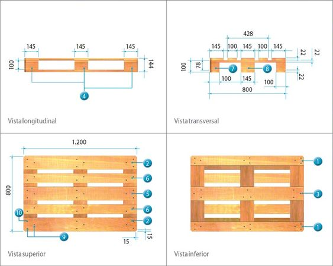

Propuesta de automatización y Celda de Manufactura Robotizada
Introducimos una propuesta de automatización integral que transforma cada fase del proceso de producción de baldosas cerámicas. Comenzamos con la implementación de un sistema de control de calidad mediante tecnología de visión artificial, que permite una clasificación precisa y automatizada de cada baldosa según sus características y calidad. Este enfoque supera las limitaciones de la clasificación manual, reduciendo la fatiga del operario y mejorando la consistencia del producto. Además, la adopción de tecnología avanzada en el esmaltado y en el paletizado con nuestra celda robótica optimiza aún más el proceso. Los equipos de esmaltado automatizados aseguran una aplicación más uniforme y controlada del esmalte, mejorando significativamente la calidad del acabado. En el paletizado, la celda robótica permite un manejo eficaz y preciso de grandes volúmenes de baldosas, reduciendo errores y aumentando la eficiencia operativa. Cada componente de nuestra solución ha sido diseñado teniendo en cuenta la seguridad, la interacción entre el personal y el equipo, y la optimización del espacio y los recursos.
1. Control de Calidad Automatizado en Clasificación de Baldosas Cerámicas
Se propone la implementación de un sistema de control de calidad automatizado en el proceso de clasificación de baldosas cerámicas. Este sistema empleará tecnología de visión artificial y clasificación óptica para examinar minuciosamente cada baldosa y separarlas de acuerdo con sus características y niveles de calidad.
Actualmente, el proceso de clasificación es realizado de manera manual por operarios. Sin embargo, esta metodología presenta limitaciones en cuanto a la capacidad de mantener una precisión constante y una velocidad de clasificación óptima a lo largo del tiempo. Los seres humanos tienden a fatigarse, lo que puede resultar en errores y variaciones en la calidad de la clasificación.

La implementación de la máquina de control de calidad automatizada permitirá superar estas limitaciones, mejorando significativamente la eficiencia y el rendimiento general del proceso de producción de baldosas cerámicas.
2. Optimización del Proceso de Esmaltado
Con el objetivo de optimizar el proceso de esmaltado y lograr un acabado de mayor calidad, se implementarán mejoras tecnológicas que aumentarán la eficiencia y permitirán una aplicación más uniforme y controlada del esmalte. Se planea adoptar equipos de esmaltado automatizados que reemplazarán el método actual.
En la actualidad, el esmaltado se realiza mediante una máquina de esmaltado por campana, la cual presenta limitaciones en cuanto a la uniformidad y el control del proceso. Para superar estas deficiencias, se propone sustituir esta máquina por una de esmaltado por velo con controlador.
Este nuevo equipo automatizado permitirá una aplicación más precisa y homogénea del esmalte sobre la pieza, garantizando un acabado de mayor calidad y consistencia. Además, al contar con un sistema de control integrado, se podrán ajustar y monitorear los parámetros del proceso de manera más eficiente, optimizando el uso de materiales y reduciendo el desperdicio.
3. Automatización del Proceso de Paletizado
En el proceso de paletizado, la tarea manual presenta varias desventajas que pueden impactar negativamente en la eficiencia y precisión. La capacidad limitada de los trabajadores para manipular grandes volúmenes de baldosas puede conducir a errores y variaciones en la disposición de las piezas sobre los palets.
Por ello, se propone incorporar una celda robótica automatizada para el paletizado, lo cual conllevará mejoras significativas. Los robots industriales poseen la capacidad de manejar grandes cantidades de baldosas de forma rápida y precisa, optimizando su acomodo en los palets y reduciendo la posibilidad de errores propios de la operación manual.
Hoja de Ruta - Celda Robótica
- Análisis para justificar una robotización y el valor agregado del uso del robot en el proceso.
- Diseño de celda robotizada considerando relación con espacio, flujo de producto, interacción con personal, seguridad funcional y agarre del robot.
- Modelo de la celda en RobotStudio con el diseño, programación y animación de movimientos. Un video que contenga una simulación de movimientos en la celda.
- Identificación de peligros y gestión del riesgo, análisis de riesgos inicial, medidas propuestas para mitigación del riesgo y evaluación de riesgos con las medidas aplicadas.
10. Diseño de Celda Robótica
Para el diseño de la celda robótica se parte de considerar el tamaño de las cajas y el peso de cada una de las referencias las cuales son:
- 60x31x80 cm, 27.5 Kg.
- 60x60x42 cm, 17.5 Kg Cerámico de interiores.
- 45x45x60 cm, 20.8 Kg. Gres porcelanico.
Teniendo en cuenta que el suministro de baldosas a la zona de paletizado se hace en bloques de dos cajas, podemos determinar la capacidad máxima de carga a manipular (55KG) por el robot basados en la de mayor peso.

Por otra parte, basado en información de referencia de las empresas de baldosas encontramos que ellos suelen usar palets que cumplen la norma europea; eruopalet o EPAL estándar de 1200x800 mm figura 10.1, con el cual teniendo en cuenta las dimensiones y el peso de las cajas de las baldosas determinamos tanto la cantidad como la distribución para ser paletizado según la referencia. Para el caso de la caja de baldosa 60x31x80cm, se hace el respectivo modelado de la distribución y cantidad de cajas en el palet, figura 10.2.

Este modelado nos permite saber la distancia más lejana en la que se debe ubicar una de las cajas, de tal manera que ya conociendo el peso máximo a manipular y el alcance máximo por medio del catálogo del fabricante de robots ABB hacemos la selección del robot que se adapta a nuestras necesidades, el cual es el robot IRB570, figura 10.3 que tiene una capacidad de carga de hasta 70Kg con un radio máximo de envolvente de 2.3 metros ficha técnica anexo 3.

Una de las particularidades de seleccionar el robot de 6 grados de libertad es la posibilidad de poder manipular las cajas que vienen en sentido horizontal y ubicarlas en el palet de manera vertical con eso ahorramos tiempo y eliminamos un paso en el alinea de proceso al tener que cambiarlas de sentido antes de paletizar. Por otra parte, con el fin de optimizar el tiempo en paletizado se propone hacer alimentación de estibas automáticamente, de tal manera que los palets se encuentras en columna vertical y una vez se requiere son alimentados por una banda transportadora la cual fue es modelada figura 10.4 ya que requiere unas condiciones especiales de carga y movimiento para transportar el palet tanto vació como cargado.
La celda robótica comprende doble alimentador de estibas uno derecho y uno izquierdo los cueles son modelados y se muestran en la figura 10.5 con el fin de que mientras el robot paletiza una estiba y termina pueda ir a seguir paletizando la estiba que se encuentra en la banda transportadora contraria mientras la estiba cargada es movida hacia la salida y se alimenta una nuevo palet vació.

Una vez modelado se hace la implementación de la celda robótica en RobotStudio figura 10.6 el cual se coloca la banda de alimentación de producto y las bandas de alimentación de estibas automáticamente.
En términos de seguridad cuanta con un encerramiento en malla que delimita el área de trabajo, existen 4 puntos de carga y descargue para el montacargas los cuales en la entrada tienen cortinas de seguridad.
El único ingreso a la celda robótica par ale personal autorizado se hace por medio de una puerta en la parte posterior la cual también cuenta con interlock para seguridad que nadie vaya a ingresar mientras la celda está en operación.

En cuanto a la programación de la celda en RobotStudio se hizo mediante el uso de smartcomponent figura 10.7 el cual permite trabajar con bloques de programación con el fin de poder llevar una lógica que se permite interconectar de manera efectiva las entradas y salidas de los equipos que intervienen en la celda.

La automatización de la celda parte de que las bandas transportadoras sean automáticas, para el caso de la banda transportadora que alimenta las cajas se implementa un timer el cual genera baldosas cada 10 segundos. La banda se detiene una vez al final una caja llega al final de la banda y es detectada por un sensor de presencia, el cual envía una señal y activa la rutina de cargue de la caja, transporte al palet y descargue de la caja, retornando a su punto de inicio nuevamente a la espera de un nuevo producto para transportar. Una vez se detecta una nueva caja en la banda repite el ciclo con la diferencia que cambia la ubicación de destino donde dejara la caja y así lo repite una y otra vez el ciclo hasta completar el número de cajas total en el palet. Una vez lleno el palet de un lado e robot inicia paletizado en la banda transportadora opuesta mientras se transporta el palet que se completó y se ubica un palet vació. Así se mantiene el proceso cíclicamente y se detendrá hasta que el controlador de la señal de parada se active un sensor de seguridad y existiendo alguna vulneración al espacio de la celda.